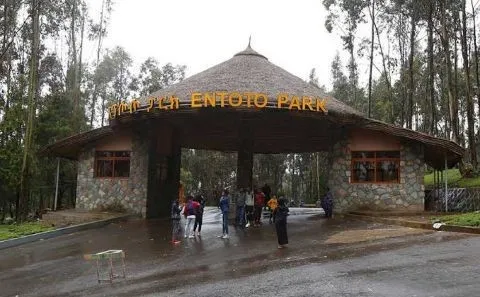

Entrance 1 of Entoto
2st Entrance (Maya\ Maryam Gate) is from Shiro Meda to Entoto Maryam Church, 3.3 km from Shiro Meda Square. Maya Gate is the main entrance.
2st Entrance (Maya\ Maryam Gate) is from Shiro Meda to Entoto Maryam Church, 3.3 km from Shiro Meda Square. Maya Gate is the main entrance.
2nd Entrance (Sululta Gate) is on the road from Addisu Gebeya to Sululta, 3km from Addisu Gebeya square.
3rdEntrance (Dil Ber\ Addisu Gebeya Gate) is on the road that turns to the right from Dil Ber, 3km from Addisu Gebeya square.
VIP Entrance – This gate is only available to VIP visitors to Entoto Park. This gate is only available to higher-ranking government officials, diplomats, and other VIPs, as indicated by Entoto Park administration.